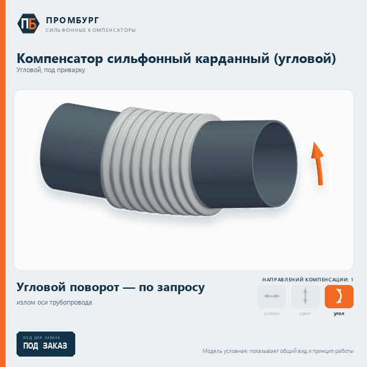

КСК · под заказ
Компенсатор сильфонный карданный (угловой)
Принимают угловой поворот — излом оси трубопровода. Ставятся по два или три в Г-, П- и Z-образных участках, распорное усилие воспринимает шарнир. Изготавливаются под заказ.

Исполнения
- Угловой односекционный
- поворот в одной плоскости
- Угловой двухсекционный
- поворот в одной плоскости, увеличенный угол
- Карданный с двумя осями поворота
- поворот в любой плоскости
Что указать в опросном листе
- условный проход Ду
- наружный диаметр и стенка трубы
- рабочая среда
- рабочее давление
- температура среды
- перемещения, которые нужно компенсировать
- способ присоединения
- количество
Как заказать
Заполните опросный лист и отправьте его на promburg@yandex.ru — подберём исполнение и пришлём предложение. Таблицы типоразмеров у этих компенсаторов нет: размеры и ход определяются по условиям работы трубопровода.